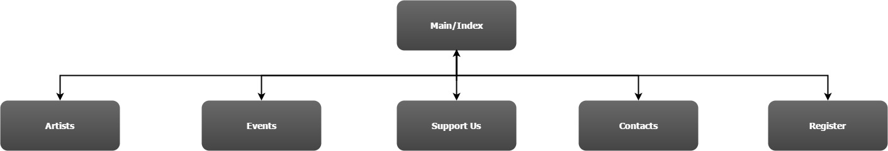

CP1406 - Assignment 2
Project Plan
Great Barrier Reef Orchestra - Website Plan
<Nicholas Harding - JC427914>
<Luke ______ - JC________>
<Nickolas Jucker - JC468021>
<Stevemn ______ - JC________>
Mission Statement
Success Evaluation
Target Audience
1. They wish to grab the attention of mostly a younger demograph but also for any orchastra enthusiasts and to gain any new supporters or members.
2. For a site like this you'll want to keep it clean and professional keeping to the employers idea of a reef theme. It'll be kept simplistic content wise by only putting as much information as needed for the user to assess everything they need to know about the venue and to go about it with a simple click.
Content
- Main shall house a short intro about the ochestra, a newsfeed(unsure if this should link to its own page), upcoming events, rotation of images showing off the venue and a call to action to join as either as member or sponsor.
- Events will show upcoming and previous concerts and its repertoire.
- Support us shows all the people or organizations that help sponsor the venue, information about what it is to be a sponsor and how to go about becoming one or just to donate.
- Contacts will hold all information to get in touch with the company and to send a message through the site itself.
- The join us page will hold some information about how to fill out the membership form and where to submit.
- Artists will display guest conductors, life members, committee and guest artists, some will have small portraits with bios while others are just text information.
- On each page there will be a tail with their copyright statement, a contact redirect and a image link to their facebook page.
- No idea what this feeder page is.
Site Flowchart (Structure Diagram)

GitHub Repository
Repo name: Assignment Two - Group
URL: https://github.com/NicholasHardingJCU/m1